literature club
横須賀
flock of birds in front of the yokosuka city library. Spontaneous shot.
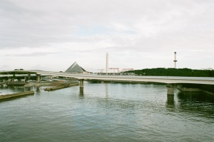seaside line
横浜金沢
train on the seaside line bound for kanazawahakkei station. the pyramid in the distance is the aquarium on Hakkeijima. I believe the tower on the right is an observation tower in the amusement park there.
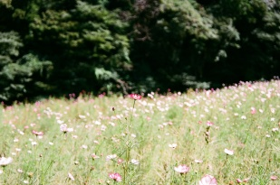cosmos field
くりはま花の国
Cosmos, also known as 秋桜 [akizakura], fall cherry blossoms.
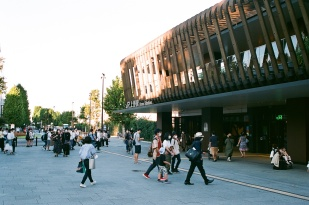park exit
上野
Park exit of ueno station, my favorite train station yet!! To the left out of frame is the museum for western art. Behind me is the 文化会館 where there are musical performances. Ameyoko, taken in a previous picture is down a hill to the right.
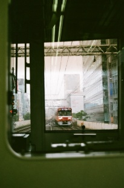oncoming traffic
横浜
Northbound keikyuu train for shinagawa as seen from the front of a southbound train for misakiguchi. Rainy weather thanks to Typhoon 15.
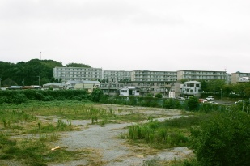overgrowth
三浦海岸
Kinda ominous buildings near Miurakaigan station.
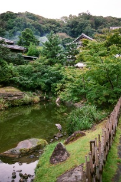enjoying the view!
鎌倉
Bird seems to like the attention it gets sitting over there. Near Engakuji.
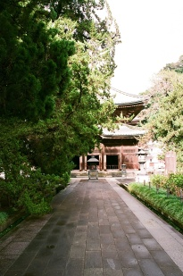incense burner
鎌倉
Gate to Kenchouji. Tree on the left is apparently 800 years old and planted when the temple was built.
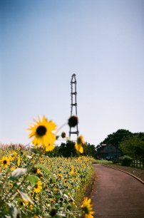sunflower out of focus
くりはま花の国
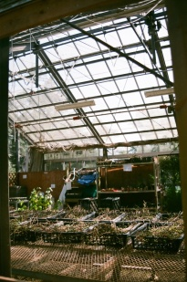
greenhouse
くりはま花の国
greenhouse area close to the end of path at Kurihama flower park.
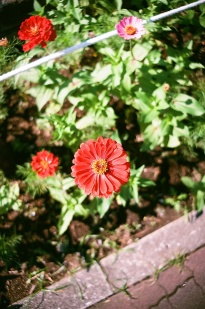sidewalk flower
くりはま花の国
cute flower, right?
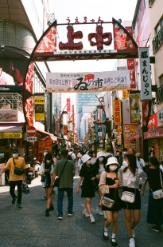商店街
アメ横
Shopping district near Ueno park.
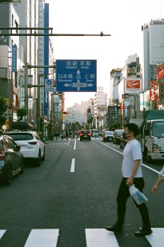御徒町
御徒町
Taken after walking back with my friend from Ueno station to Okachimachi.

鶴岡八幡宮
鎌倉
Tsurugaoka Hachimanguu. Perhaps the most famous location in all of Kamakura.

横須賀の丘
横須賀
View looking south from the top of Yokosuka hill. The temple is called Ryuuhonji. Directly behind is the Yokosuka central peace park.
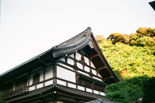建長寺
鎌倉
Kenchouji in kamakura. Probably the biggest temple there?
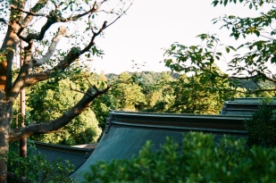軒
鎌倉
View from the top of tsurugaokahachimanguu in Kamakura
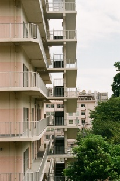hospital stairs
横須賀
Stairs at the Yokosuka city hospital
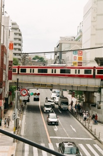keikyuu overpass
横須賀
Southbound train for misakiguchi leaving yokosukachuo
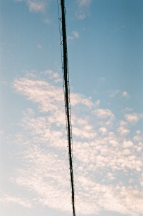電線
鎌倉
Near 建長寺